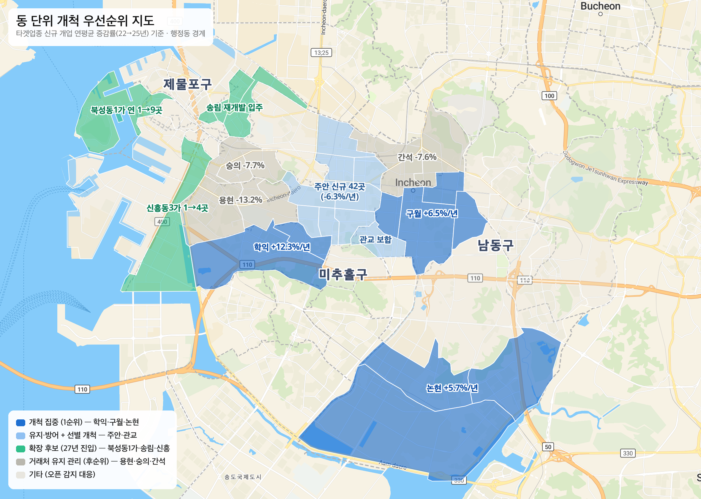

경기북부FS/특수지점 · 내부 검토자료 · v7
경인특판대리점 지역 운영 플랜 및 육성 계획 (보완자료)
영업지역: 인천 남동구/미추홀구/제물포구 | 대리점장 교체 검토 건 (26.09월부 개설 목표)
기준일 2026-08-26 | 인구: 행정안전부 주민등록(22.10~26.07) | 시장: 지방행정 인허가 — FS 타겟업종 13종(무인점포·기타 휴게음식점 제외) | 거래율/매출: FS채널기획팀 표(26.3.15) | 개척 실적: ERP 예상매출 집계(24년~26.7월, 인천 3구 대리점 합)
본 자료는 FS채널기획팀 보완 요청 사항(① 주요 대리점 운영 현황 및 통합 가능성 검토 ② 지역도 기반 운영 플랜 ③ 거래율/매출액 기반 단계별 육성 플랜)에 대해 당 지점 수집 데이터와 최근 3개년 개척 실적(ERP)으로 근거를 보완한 자료입니다. 핵심 검토 결과는 다음과 같습니다.
- 타겟업종 기준 해당 지역 시장은 신규 개업 연평균 -1.6%(22→25년)로 시장 규모는 정체 상태이나, 개·폐업 교체가 활발한 시장임.
- 현행 개척 수준(월 4곳)은 거래처 자연 감소분을 겨우 상쇄하는 수준으로, 거래처 저변이 확대되지 못한 구조적 원인이 확인됨.
- 총무 운영 요건(70~80백만원) 도달을 위해서는 거래처 개척 확대(24년 전략개척으로 검증)와 품목 확대를 통한 거래처당 매출 확보(25~26년 실적으로 검증)의 병행이 필요하며, 병행 시 28년 3분기 도달 가능할 것으로 판단됨.
- 본 안은 대리점 대형화 방향과 상충하지 않음 — 3개 구 광역 단일 대리점 1곳을 대형 대리점 기준(70~80백만원)까지 육성하는 안으로, 육성 완료 시 인접 지역 통합의 주체로 활용 가능함 (2항).
1.검토 요약
| 지표 | 수치 | 비고 |
|---|
| 3구 인구 합 (26.07) | 99.7만 명 | 인천 306만의 32.6% 점유. 미추홀 증가 전환·제물포 26.01월 저점 후 반등 |
| 타겟업종 운영 매장 (실측) | 895곳 | 미추홀 409 / 남동 364 / 제물포 122 (무인점포·기타휴게 제외) |
| 타겟업종 신규 개업 추이 | 연평균 -1.6% | 연도별 308→295→271→293곳(22→25년) — 규모 정체. 25년 폐업 333곳(교체 활발) |
| 거래율 / 시장 입점율 | 25.8% / 21.2% | 거래 190곳. 거래율 분모 = 본사 전수 737곳 · 입점율 분모 = 당사 실측 895곳 |
| 개척 실적 (24년~26.7월) | 166곳 | 월평균 3.9~7.3곳 · 거래처당 월평균 예상매출 26.0~51.3만원 (6항) |
| 경인특판 월평균 매출액 | 27.9백만원 | 25년 실적. 26년 본사 타겟 28.9백만원 · 총무 운영 요건 70~80백만원 |
2.대리점 교체 타당성 검토 — 통합이 아닌 유지·교체 (보완요청 ① 대응)
검토 순서: 대리점 대형화 방향과의 정합성을 먼저 확인하고, 지역 내 주요 플레이어와의 통합 가능성을 대리점별로 검토·소거한 후, 대리점 유지·교체의 타당성 및 필요성을 정리함. 수치 출처는 기획팀 "FS 지역 경쟁력 강화" 표.
2-1. 대리점 대형화 방향과의 정합성 — 본 안은 대리점 수 축소 방향과 상충하지 않음
- 경인특판은 지역 단위로는 이미 대형화가 완료된 구조임 — 3개 구(인구 99.7만 명, 타겟업종 895곳)를 묶은 광역 단일 대리점으로, 본 안은 대리점 수를 늘리는 안이 아니라 1곳을 대형 대리점 기준까지 육성하는 안임.
- 본 육성 플랜의 목표가 곧 대형화 기준임 — 6항 육성 플랜의 도달 목표(28년 75.5백만원)는 총무 운영 요건(70~80백만원)과 동일. 즉 "대리점 수 유지 + 대리점당 규모 확대"로 대형화 방향의 실행 사례에 해당함.
- 통합 시 합산 수치는 서류상 대형화에 그침 — 대창상사(69.5백만원)와 합산 시 97.4백만원으로 즉시 대형화로 보이나, 강화군~남동구 간 일일 배송·방문 동선이 성립하지 않아 합산 매출이 유지되지 않는 결합임. 대형화의 실익(배송 밀도·관리 효율)은 지리적으로 연속된 지역에서만 발생함.
2-2. 통합 대안 검토 (소거)
| 통합 대안 | 검토 결과 (기각 사유) |
|---|
대창상사와 통합
(FS 육성, 제물포 서브) | 주력 운영 지역이 강화군으로 강화~남동 간 일일 배송·방문 동선이 성립하지 않음. 월 69.5백만원 규모로 26년 성장 타겟(71.7→77.2)까지 기배정되어 자기 지역 육성에 여력 소진. 3구(인구 99.7만) 추가 시 양쪽 모두 관리 희석 우려. |
GT 대리점과 통합
(남인천/동인천/삼성에프에스) | 본사 표 기준 전원 유지대리점으로 지역 내 육성급 대리점 부재 — 성장 투자 여력이 없는 대리점에 성장 지역을 맡기는 구조적 한계. 채널 특성도 상이(GT 소매유통 vs FS 업소직납). 인접 서부천대리점은 월매출 -14% 역성장 중. |
→ 검토 결과: 지역 내 인수 여력이 있는 통합 상대가 없어, 대리점 유지 + 대리점장 교체가 지역 내 자사 경쟁력 강화의 유일한 경로로 판단됨. 유지·교체의 적극적 근거는 아래와 같음.
2-3. 유지·교체의 적극적 근거
- 영업활동 강화가 성과를 결정한다는 자체 실증(24년 전략지역 개척활동) — 지점 인원 투입으로 직접 방문 개척한 24년, 3구 개척이 월 7.3곳(남동 52곳/년)으로 평시(월 4곳 수준)의 약 2배. 성과 차이가 지역이나 대리점 역량이 아닌 활동량과 지원에서 발생함을 보여줌 — 신규 대리점장 + 전략개척 프로그램 병행 시 재현 가능할 것으로 판단됨.
- 축소(통합 이관) 시 비용은 확정적, 유지·교체 시 비용은 없음 — 거래 190곳·월 27.9백만원은 장기 운영으로 축적된 자산. 이관 혼선으로 보수적으로 15%만 이탈해도 월 4.2백만원(연 50백만원 수준)이 경쟁사로 이전되며, 연 폐업 333곳·개업 293곳이 교차하는 시장 특성상 회수가 어려움. 반면 유지·교체는 후보자가 연초부터 당 대리점 총무로 활동 중이어서 이관 비용·영업 공백이 발생하지 않음.
- 선점 시기를 놓치면 회복 불가 — 미추홀 인구 증가 전환·제물포 7개월 연속 반등은 재개발 입주로 시장이 확대되기 직전의 신호. 전담 대리점 부재 시 신규 개업(연 293곳)을 경쟁사가 선점하며, 이후 대형 대리점을 구성하려 해도 인수할 거래 기반이 남지 않음. 축소는 육성 이후에도 가능하나 잃은 거래 기반은 되돌릴 수 없음.
- 거래율 25.8%는 상한이 아님 — 인천 전체 입점율 수준이며, 연수구 30%·계양구 32% 사례가 상방 여지의 근거.
- 미개척 여지 존재 — 당사 실측 타겟업종 895곳 vs 본사 전수 737곳으로 전수 미등록 매장 약 160곳 + 신규 개업 연 293곳 발생. 전담 대리점 체제여야 개척이 우선순위 유지.
→ 본 안은 대형화의 예외가 아니라 수순임: 육성 완료 시 경인특판이 운영 요건(70~80백만원)을 충족하는 대형 대리점이 되며, 이후 인접 지역 통합의 주체로 활용 가능. 분기 지표 점검에서 미달 시 그 시점에 축소·통합을 재검토할 수 있어 하방 리스크도 제한적임.
리스크 관리: ① 분기 관리 지표(개척 곳수/거래처당 매출/거래율) 6개월 점검 후 미달 시 재검토 ② 제물포 확장은 대창상사 경계 협의 완료 조건 ③ 27년 총무 증원 로드맵으로 세대 연속성 확보.
3.영업지역 운영 현황 — 남동구/미추홀구/제물포구
| 구분 | 인구 (4년 추이) | 타겟업종 운영 | 신규 개업 (22→25년) | 25년 폐업 | 운영 방향 |
|---|
| 미추홀구 | 41.9만 (+2.8%) | 409곳 | 142→126 (연평균 -3.9%) | 133 | 공략 (선별) |
| 남동구 | 47.9만 (-5.7%) | 364곳 | 124→133 (연평균 +2.4%) | 151 | 유지·방어 + 성장 상권 |
| 제물포구 | 9.9만 (-3.1%) | 122곳 | 42→34 (연평균 -6.8%) | 49 | 선점 (27년 확장) |

- 미추홀구 — 재개발 입주로 인구 증가 전환, 3구 중 최대 시장(409곳). 다만 신규 개업 총량은 연평균 -3.9%로 감소 추세여서 개척은 성장 상권 선별 집중이 필요함. 학익동이 인구(+19%/2년)와 신규 개업(연평균 +12.3%)이 동반 증가하는 유일한 동.
- 남동구 — 인구는 감소하나 타겟업종 신규 개업이 증가(연평균 +2.4%)하는 유일한 구. 구월(+6.5%)·논현(+5.7%)이 견인하며 카페 채널 밀도 3구 중 최고 — 주거 인구와 상권 흐름이 반대로 움직이는 지역.
- 제물포구 — 인구 26.01월 저점 후 7개월 연속 반등(원도심 재개발 입주 신호). 시장 규모는 작으나(122곳) 북성동1가가 연 1곳→9곳으로 회복(월미도·개항로 관광상권). GT 동인천·FS 대창상사 모두 서브 수준이어서 선점 여지가 큰 것으로 판단됨.

타겟업종 시장은 규모는 정체, 개·폐업 교체는 활발한 시장임 — 신규 개업이 연 271~308곳 범위(연평균 -1.6%)로 유지되는 한편 폐업이 연 284~400곳 발생. 시사점은 두 가지: ① 개척은 거래처 자연 감소분을 초과해야 순증 가능 ② 매장 교체가 빠른 만큼 신규 오픈 감지를 통한 초기 방문 선점이 유효한 영업 수단임.
※ 전체 업종 기준 순감(-206곳/년)은 무인점포·기타 휴게음식점 감소에 따른 것으로 당사 영업 대상 시장과 무관. 제물포구 인구는 26.07월 행정구역 개편 이전 구간을 "동구 전체 + 옛 중구의 제물포 소속 법정동" 합산으로 산출(영종 제외).
4.지역도 기반 개척 우선순위 — 동 단위

※ 행정동 경계 기준(북성동1가는 개항동, 신흥동3가는 신흥동 관할 표시). 배경 지도는 시장분석 대시보드와 동일(MapTiler).

- 개척 집중 지역 (1순위) — 학익동(연평균 +12.3%, 인구 +19% 동반)·구월동(+6.5%)·논현동(+5.7%): 신규 개업이 구조적으로 증가하는 동으로 개척 활동의 중심.
- 유지·방어 + 선별 개척 지역 — 주안동(25년 신규 42곳으로 절대량 1위, 단 연평균 -6.3% 감소)·관교동(23곳, 보합): 기존 거래처 방어와 신규 오픈 선별 대응.
- 거래처 유지 관리 지역 (후순위) — 용현동(-13.2%)·숭의동(-7.7%)·간석동(-7.6%): 신규 개척보다 기존 거래처 유지 관리 중심.
- 확장 후보 지역 (제물포) — 북성동1가(연 1→9곳 회복, 관광상권)·송림동(인구 +7% 입주 시작): 27년 진입 검토.
※ 이전 버전의 "관교동 1위(신규 138곳)"는 무인점포 포함 전체 업종 집계에 따른 부풀림으로, 타겟업종 기준 연 23곳(보합)으로 교정함. 후보자 강점(베이커리 채널)은 주안·구월 상권과 부합.
5.지역도 기반 단계별 운영 플랜 (보완요청 ② 대응)
| 단계 | 내용 |
|---|
Phase 1
26.09~26.12 | 안착 + 전략개척 재개 — 기존 거래처(190곳) 전수 인수인계 방문으로 이탈 최소화. 개척은 24년 검증된 수준(월 7~8곳)으로 재가동하되 개척 집중 지역(구월/논현/학익) + 신규 오픈 감지 대응. 개척 시점부터 품목 세트 진입(우유+가공유+휘핑)으로 거래처당 월평균 매출 34만원 수준 확보. |
Phase 2
27.01~27.06 | 유지 지역 선별 확대 + 품목 확대 (총무 투입 예정 시점) — 주안/관교 신규 오픈 선별 개척, 기존 카페 거래처 품목 확대(우유 단일 → 가공유·휘핑·베이커리 유지류)로 거래처당 매출 인상. 거래율 31% 도달 목표 = 27년 2분기 (6항 참조 — 26년 내 31%는 실적 대비 무리한 목표로 판단됨). |
Phase 3
27.07~ | 제물포 확장 — 인구 반등 1년 이상 확인 시점에 북성동1가(월미도·개항로 회복 상권)·송림동(입주) 진입. 대창상사(주력 강화도)와 경계 협의 병행. 100평 이상 대형 신규는 오픈 감지 시스템으로 전담 관리. |
6.거래율/매출액 기반 단계별 육성 플랜 (보완요청 ③ 대응)
단계별 육성 목표 (병행안 기준): 현 거래율 25.8% · 월평균 매출액 27.9백만원 > '26년말 27.8% · 30.6백만원 > '27년 2분기 31.3% (거래율 31% 목표 도달) > '27년말 34.3% · 56.2백만원 > '28년 3분기 총무 운영 요건 도달 (71.1백만원) > '28년말 39.8% · 75.5백만원
추정 계수는 가정이 아닌 최근 3개년 개척 실적(ERP 예상매출, 인천 3구 활동 대리점 합계)을 사용함.
| 연도 | 개척 수 | 월 예상매출 합 | 거래처당 | 월평균 개척 | 비고 |
|---|
| 2024 | 88곳 | 2,289만원 | 26.0만원 | 7.3곳 | 전략지역 개척활동 — 지점 인원 투입 직접 방문 (개척 수 우위) |
| 2025 | 51곳 | 2,407만원 | 47.2만원 | 4.3곳 | 평시 선별 개척 (거래처당 매출 우위) |
| 2026 (1~7월) | 27곳 | 1,385만원 | 51.3만원 | 3.9곳 | 연환산 46곳 수준 |

- 거래처 저변이 확대되지 못한 원인 — 거래 190곳은 시장 폐업률만큼 자연 감소함(연 15.3~24% 수준, 월 2.4~3.8곳). 현행 개척 월 3.9~4.3곳은 이 감소분을 겨우 상쇄하는 수준으로 활동을 해도 제자리인 구조. 24년 전략개척(월 7.3곳)만이 감소분을 확실히 초과함.
- 개척 수와 거래처당 매출은 반비례 — 대량 개척한 24년은 거래처당 26만원, 선별 개척한 25~26년은 47~51만원. 플랜의 기준값 34만원 = 선별 개척 예상매출(48.6만원)에 실현율 70%를 적용한 보수적 수치.
위 계수로 개설(26.09월) 이후를 분기 단위로 추정함. 공통 가정: 기존 거래처 자연 감소 연 15.3%(폐업 기준 하한) · 신규 거래처 첫 1년 연 24% 수준 감소 · 개척 첫 분기는 정착 기간으로 매출의 절반만 반영 · 기존 거래처는 품목 확대로 27년 분기당 +4%(28년 +3→+2%) 매출 인상.
| 육성 방안 | 개척/월 | 거래처당 | 27년 4분기 | 28년 4분기 (입점율) | 요건 70~80 도달 |
|---|
| ① 현행 수준 유지 시 | 4곳 | 34만원 | 42.8백만원 | 52.5백만원 (24.6%) | 미도달 |
| ② 개척 확대 단독 시 (24년식 대량 개척) | 7곳 | 18만원 | 42.5백만원 | 52.0백만원 (32.7%) | 미도달 |
| ③ 개척 확대 + 품목 확대 병행 시 (권장) | 7곳 | 34만원 | 56.2백만원 | 75.5백만원 (32.7%) | 28년 3분기 (71.1) |

- ①과 ②는 28년말 매출이 동일(52백만원 수준) — 거래처당 매출만 높이면 저변이 확대되지 않고, 개척 수만 늘리면 거래처당 매출이 낮음. 단독으로는 요건 도달 불가하며, 개척 확대와 품목 확대의 병행(③)이 유일한 도달 경로임. 두 요소 모두 자체 실적으로 검증됨(개척 수: 24년 전략개척 월 7.3곳 / 거래처당 매출: 25~26년 선별 개척 47~51만원).
- 거래율 31% 도달은 27년 2분기로 판단됨 — 병행안 기준 26년말 27.8% → 27년 2분기 31.3%(전수 737곳 고정 가정). 26년 내 31%는 실적 수준 대비 무리한 목표로, 27년 상반기 목표가 방어 가능한 수치임.
- 관리 지표는 개척 곳수 단독이 아닌 "월 7곳 × 거래처당 34만원"의 조합 — 거래처당 매출이 25만원 수준에 그치면 28년 4분기 63백만원으로 미도달. 대형 거래처 유치(월 1.5백만원급)는 부족분 보완 수단으로 배치.
- 28년말 시장 입점율 32.7%(293곳/895곳) — 인천 최고 계양구(32%) 수준으로 실측 시장 기준 상한 안쪽의 현실적 목표.
7.검토 시 유의사항 (데이터 기준)
- 개척 실적(24년~26.7월)은 인천 3구에서 활동한 대리점 합계로 경인특판 단독 실적이 아님 — 신규 대리점 단독으로 월 7곳 수행 시 24년식 지점 인원 투입(전략개척 프로그램) 병행이 전제.
- 매출액은 ERP 예상매출 기준으로 실현율(예상 대비 실제 청구)은 미검증 — 플랜은 70%를 적용했으며, 실제 청구 매출 확인 시 재보정 필요(실현율이 가정보다 높으면 도달 시점이 28년 1분기까지 단축).
- 거래처 자연 감소율 연 15.3%는 인허가 폐업 기준 하한선 — 폐업 없이 거래만 중단하는 이탈은 미포함으로, 실제 필요 개척 수는 이보다 많을 수 있음.
- 타겟업종 13종 기준: 유제품을 상시 사용하는 업태(카페·디저트 7종 + 외식 6종)만 집계 — 무인점포·자판기가 집중된 '기타'·'기타 휴게음식점' 제외. 업종 범위를 넓혀도 동별 순위와 증감 방향은 동일함.
- 시장 추이는 완결 연도(2022~2025) 총량의 연평균 증감률 기준 — 2026년은 공공 데이터 수집 지연으로 집계 진행 중이라 추이 판단에서 제외.
- 거래율 분모(전수 737곳)는 기획팀 표(26.3.15) 기준으로 분기 갱신 — 보고 시점 최신 표 재확인 요망. 입점율 분모(실측 895곳)는 당사 수집 데이터로 매월 자동 갱신.